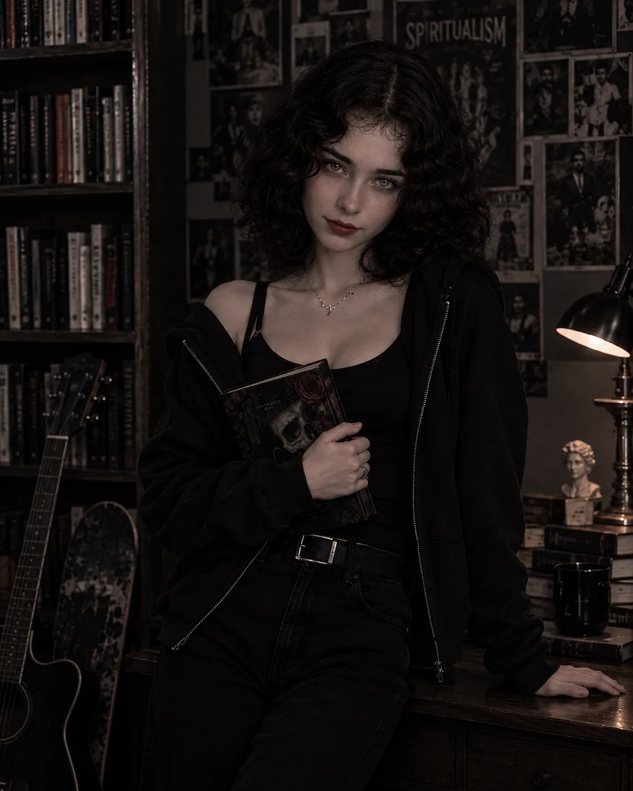
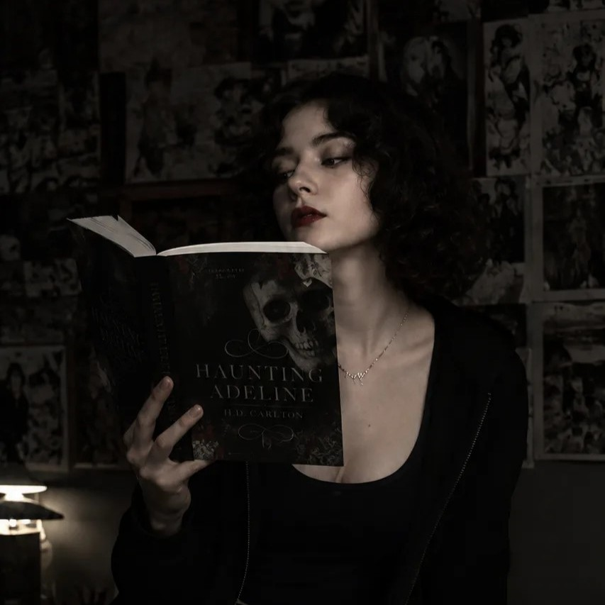
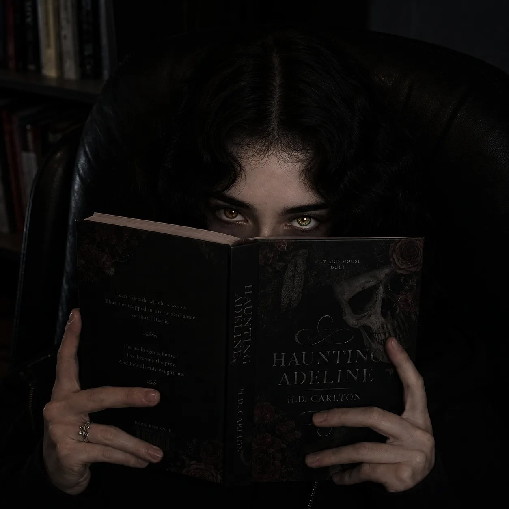
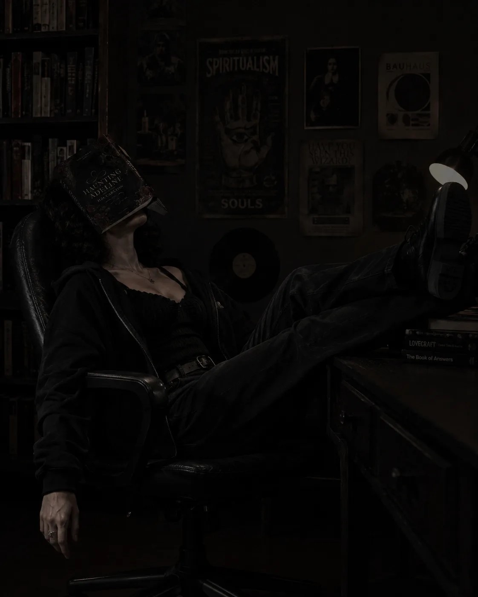
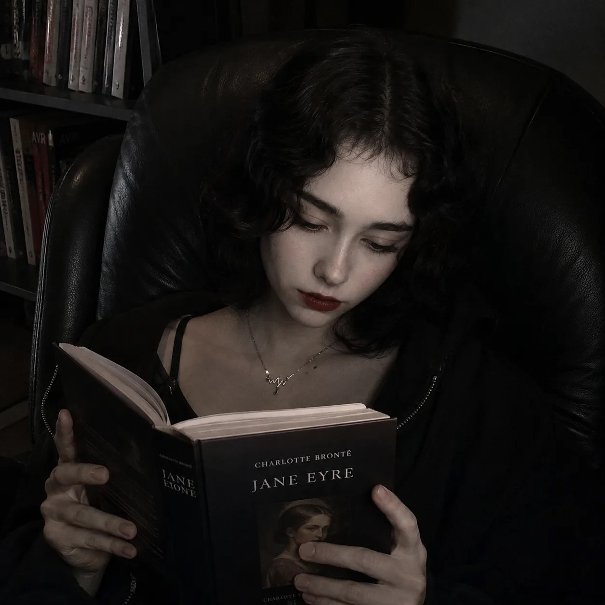

И снова привет. Если ты ТУТ, в этой вкладке, значит тебе все таки интересно что это за сайт. Короче поясняю историю...
Все началось с 2018 года. Мне тогда подруга показала первую игру "Gacha Live". Я создавала там слишком много персов, что даже не вспомнить какая ос была первой. Потом появился "Gacha Club". Я долго еще не переходила, но когда перешла была вахуе, что там совсем по другому. Типо интерфейс схож, но там намного разнообразней вещи и позы. Там я пробыла около 3 лет. С 2024года я перешла в "Gacha2". Год снимала в тт и в ютуб. В ютубе популярность набрать сложно, зато в тт у меня видео залетали. Ну по крайней мере то определеного времени. Потом актив упал и я забила на это, но так как я с детства люблю фантазировать, я не могла успокоится. В мою голову лезло слишком много сюжетов. Я пыталась сделать видео которые не залетали, я писала рассказы в тгк которые никто не читал. В конце концов сдалась и всю энергию перенесла в учебу. И вот недавно я пообщалась с одногрупницей и думаю, что надо попробовать совместить и "работу" и хобби. Вот так я и пришла к идее этого сайта. Надеюсь после выкладывания в тт этот сайт хоть немного наберет популярности, потому что в будущем я хочу развивать его (он красивый получился)